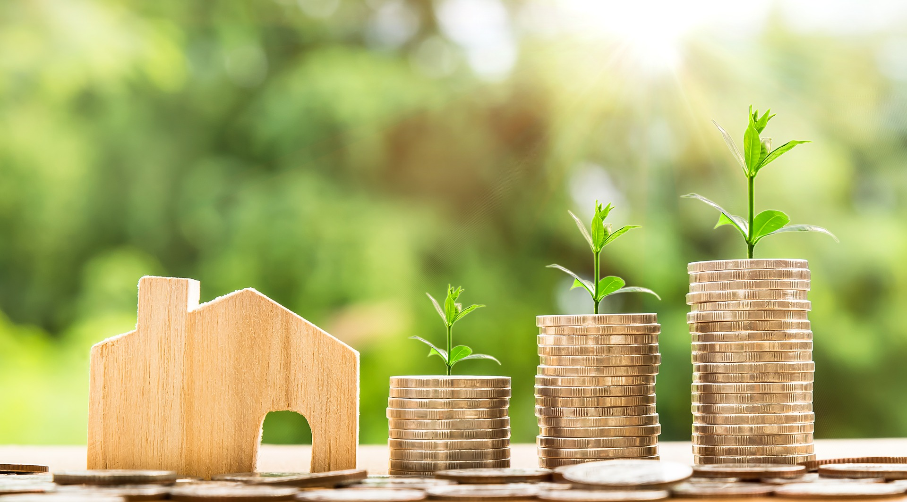

La economía y el medio ambiente están intrínsecamente vinculados en el mundo actual. Este resumen explorará la interacción entre estos dos aspectos fundamentales y cómo sus dinámicas impactan en la sociedad y el planeta.
La economía se basa en la producción, distribución y consumo de bienes y servicios, lo que a menudo conduce al agotamiento de recursos naturales y a la generación de residuos y contaminación. Esto ha llevado a una creciente preocupación sobre el impacto ambiental de las actividades económicas. La explotación desmedida de recursos naturales y la emisión de gases de efecto invernadero han contribuido al cambio climático, un fenómeno que amenaza la estabilidad económica global.
Por otro lado, el medio ambiente proporciona los recursos críticos que sustentan la economía. La biodiversidad y los servicios ecosistémicos, como la polinización de cultivos y la purificación del agua, son esenciales para la producción de alimentos y bienes. La degradación ambiental y la pérdida de biodiversidad pueden tener efectos adversos en la seguridad alimentaria y la estabilidad económica.
La relación entre economía y medio ambiente es bidireccional. Por un lado, la economía puede dañar el medio ambiente, pero también puede ser una fuerza positiva para la conservación ambiental. La transición hacia una economía verde, que busca reducir la huella ambiental y promover prácticas sostenibles, ofrece oportunidades económicas a través de la creación de empleos en sectores como las energías renovables y la tecnología ambiental.
